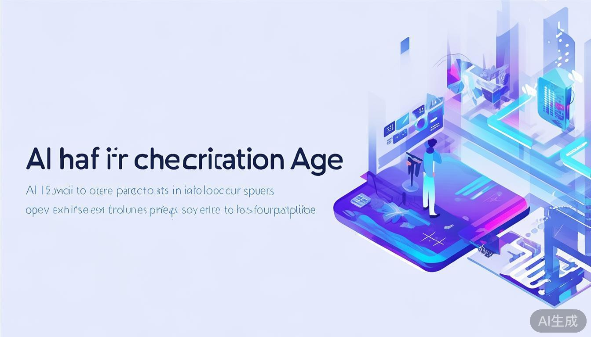

开源 AI 进阶篇：网络安全 · 一人公司 · 手机操作
这是《最新开源对话式 AI 项目全景》的进阶篇。上一篇教你把项目跑起来，这一篇回答三个更实际的问题： ① 开源 AI 和网络安全什么关系，怎么用它、怎么不踩坑？ ② 开源 AI 怎么帮你撑起一家一人公司？ ③ 这些开源项目，怎么在手机上操作？
第一部分 · 开源 AI 与网络安全
1.1 先说风险：开源 ≠ 自动安全
2026 年最响的一次安全警报，来自现象级项目 OpenClaw。它火的同时，安全审计发现：全网有 4 万多个暴露在公网的 OpenClaw 实例，其中 1.5 万个存在远程代码执行（RCE）风险。根源很典型：
- 它默认信任
localhost流量，且不强制身份验证； - 很多人图省事用 nginx/Caddy 反向代理对外暴露，结果所有外部请求都被当成「来自本机」的可信流量；
- 早期版本甚至允许「a」这种一位数密码。
教训：开源 AI 的「本地优先」隐私优势，会因为一次错误的端口暴露而瞬间归零。
1.2 开源 AI 的安全红线（跑之前先做）
- 不要把服务端口绑到
0.0.0.0暴露公网，只保留127.0.0.1本地回环。 - 远程访问用零信任组网（Tailscale 等），把范围限制在你自己的可信设备上，而不是挂反向代理。
- 默认关闭宽松鉴权，
allowInsecureAuth这类选项只在完全信任的局域网内开。 - 最小权限：Agent 每接一个新服务（邮箱、GitHub、智能家居），攻击面就扩大一分，只授权真正需要的。
- 敏感数据不上云：身份证、密码、商业机密，用本地 Ollama 跑，数据不出本机。
1.3 反过来：用开源 AI 做网络安全
开源 AI 不只是「被保护的对象」，它本身就是安全从业者的利器：
| 场景 | 怎么用开源 AI |
|---|---|
| 代码审计 | 用 DeepSeek V4 / GLM 读代码，找 SQL 注入、越权、硬编码密钥 |
| 日志分析 | 把海量日志喂给 Kimi K3（长上下文），自动归纳异常模式 |
| 威胁情报 | 联网搜索 + 本地模型总结，生成可读的情报简报 |
| 钓鱼识别 | 用本地模型判断邮件/链接是否可疑（数据不出本机，适合处理敏感样本） |
| 渗透测试辅助 | 让模型写 PoC 脚本、解读漏洞报告、生成检测规则 |
| 安全知识库 | GPT4All LocalDocs 把安全规范/漏洞库做成离线问答 |
关键：安全场景用本地部署（Ollama）最合适——你处理的样本和日志，不该送到别人的云端。
第二部分 · 开源 AI 撑起一人公司

2.1 成本账：为什么开源 AI 是一人公司的核武器
请一个兼职虚拟助理，市场价每月 500-2000 美元。而用开源 AI 搭一个 24 小时不休息的「数字员工」：
- 软件：开源免费（OpenClaw / Open WebUI / Coze 都是 MIT/Apache）；
- 模型：网页免费，或 API 按量（DeepSeek-V4.1-Flash 峰时输入 2 元、输出 8 元每百万 tokens，缓存命中输入 0.04 元，闲时减半；官方定价页，2026-10-27 核对）；
- 实测：用 Claude Sonnet 级别模型接 OpenClaw 处理邮件分拣、线索跟进、网页调研，月度 API 花费约 5-15 美元（几十到一百块人民币）；
- 纯本地（Ollama）跑，成本趋近于零。
结论：过去「雇人」才能做的事，现在一个人用几十块钱就能搞定。
2.2 一人公司的开源 AI 岗位清单
| 岗位 | 开源 AI 方案 |
|---|---|
| 客服 | OpenClaw 接微信/飞书/Telegram，自动分拣+起草回复 |
| 销售跟进 | OpenClaw 新线索进来几分钟内发个性化跟进，3/7 天后自动补发 |
| 内容编辑 | DeepSeek 写初稿 你注入观点 多平台分发 |
| 设计 | Stable Diffusion / Flux 本地出图 |
| 视频 | ComfyUI + 可灵/即梦，一个人出片 |
| 开发 | DeepSeek-Reasonix / Cursor 接本地模型写代码 |
| 运营 | n8n + 开源模型做自动化流水线（热点监控选题初稿终审） |
| 财务/文档 | GPT4All LocalDocs 本地知识库问答 |
2.3 从「一人公司」到「个人 IP」
开源 AI 让「持续输出」从拼意志力变成拼流程。核心公式不变：
个人 IP = 定位 × 内容 × 持续输出
开源 AI 同时压低了这三样的成本——而这，正是一人公司能成立、能长大的根本原因。
第三部分 · 手机上操作开源项目
3.1 先认清现实：手机能跑什么
手机跑的是小模型（1B-4B），够日常问答、总结、翻译，但别指望它跟桌面 RTX 4090 比。速度参考：
| 手机 | 模型 | 速度 |
|---|---|---|
| 骁龙 8 Elite | Qwen3 1.7B | ~40 tokens/s |
| 骁龙 8+ | Qwen2.5 0.5B | 40-60 tokens/s |
| iPhone 16 Pro | Llama 3.2 3B Q4 | ~15 tokens/s |
全程离线、飞行模式也能用、零 API key、零费用。
3.2 方案 A：傻瓜式（多数人适用）
安卓 下载 MLC Chat（或 PocketPal AI），模型商店里直接选 Qwen3 1.7B / Phi-4 Mini，下载（1.5-3GB） 加载 开聊。
iPhone 下载 PocketPal AI 或 LLM Farm，内置模型列表一键下载 Llama 3.2 1B / Phi 系列小尺寸模型，苹果 Neural Engine 自动加速，无需配置。
首选 PocketPal AI：双平台免费、开源、模型库最大、持续维护。
3.3 方案 B：动手派（安卓 Termux + Ollama）
# 1. 从 F-Droid 装 Termux（不要用 Play 商店旧版）
pkg update && pkg upgrade -y
pkg install wget curl git python -y
# 2. 装 Ollama
curl -fsSL https://ollama.com/install.sh | sh
# 3. 拉小模型（Qwen 0.5B 仅 300MB）
ollama pull qwen:0.5b-instruct
ollama run qwen:0.5b-instruct
3.4 方案 C：iPhone 进阶（自定义 GGUF）
从 Hugging Face 下载 GGUF 文件（如 Llama-3.2-3B-Instruct-Q4_K_M.gguf，约 1.8GB），存到「文件」App，在 PocketPal 里「添加自定义模型」导入即可。
3.5 手机模型怎么选
| 模型 | 大小 | 内存 | 适合 |
|---|---|---|---|
| SmolLM2 1.7B | ~1GB | 4GB+ | 超快、轻量 |
| Llama 3.2 1B | ~0.8GB | 4GB+ | 快速闲聊 |
| Llama 3.2 3B 等 3B 级 | ~2GB | 8GB+ | 手机最佳平衡 |
| Gemma 4 2B/4B | 0.7-1.5GB | 4-8GB | 谷歌品质、多语言、有 agent 能力 |
| Phi-3 Mini 3.8B | ~2.4GB | 8GB+ | 推理、代码 |
| Qwen2.5 3B | ~2GB | 8GB+ | 中文、代码 |
中文任务优先 Qwen 系列；要轻快选 Gemma 4 小尺寸；要推理选 Phi-3 Mini。
3.6 手机运行的坑
- 屏幕常亮：iOS 会限制后台 CPU，推理时保持亮屏。
- 内存带宽是瓶颈：手机跑模型卡的是内存带宽，不是算力。
- 别跑超过 4B 的稠密模型：会慢到崩溃。
- 选对量化：手机用 Q4 量化最合适。
一键打包下载
这三篇（全景 + 进阶 + 主站全部内容）已打包成一个 zip，见网站「四大作品」区的下载按钮，点一下即可全部下载到本地，离线也能看。
本系列持续更新。开源世界每月变一次，随时回来拿最新清单。
出处声明：本页内容为白驹 ccowork原创，或已标注引用来源；改编内容遵循原始项目许可证（如 MIT / CC），不侵犯原作者权益。若引用内容涉及版权问题，请联系我们更正。